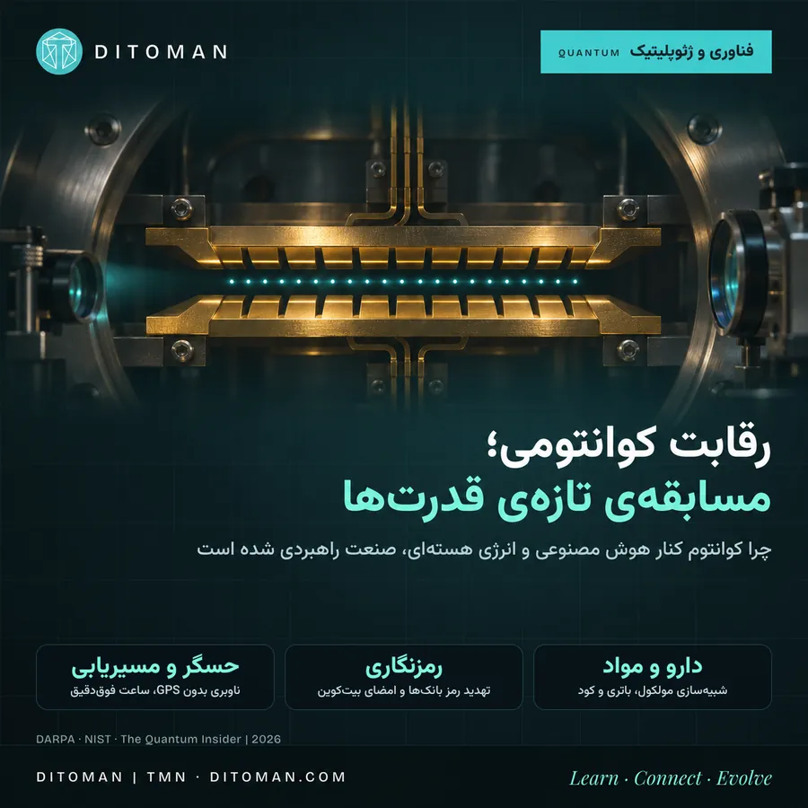
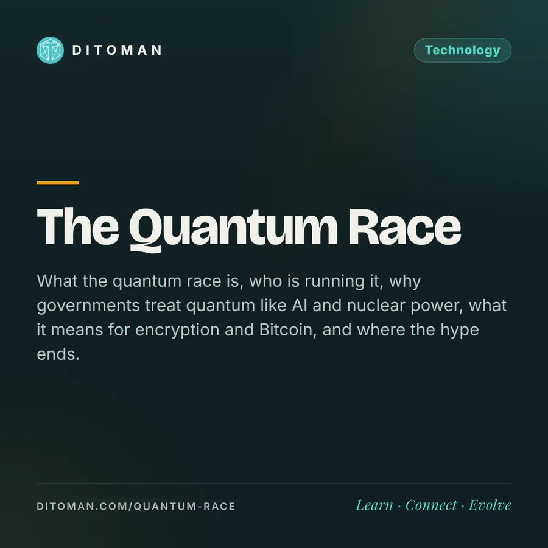

رقابت کوانتومی؛ مسابقهی تازهی قدرتها
The Quantum Race: A New Contest Between Powers
What the quantum race is, who is running it, why governments treat quantum like AI and nuclear power, what it means for encryption and Bitcoin, and where the hype ends.
رقابت کوانتومی چیست، چه کسانی در آن میدوند، چرا دولتها با کوانتوم مثل هوش مصنوعی و انرژی هستهای برخورد میکنند، چه معنایی برای رمزنگاری و بیتکوین دارد، و هیاهو کجا تمام میشود.
فرض کنید کسی امروز نسخهای از ارتباطات رمزشدهی یک بیمارستان را ذخیره کند، به این امید که چند سال بعد ابزار باز کردنش را داشته باشد. پروندههای پزشکی امروز، آن روز هم حساساند. همین سناریو یکی از دلایلی است که دولتها و بانکها از همین حالا شیوهی حفاظت از داده را عوض میکنند، پیش از آنکه کامپیوتر کوانتومی واقعاً از راه برسد.
وقتی یک شبکهی خبری تیتر میزند «چه کسی رقابت کوانتومی را میبرد؟»، دیگر با یک موضوع آزمایشگاهی طرف نیستیم. کوانتوم در کنار هوش مصنوعی و نیمههادی، وارد فهرست فناوریهایی شده که دولتها آن را مسئلهی امنیت ملی میدانند. این مقاله توضیح میدهد ماجرا چیست، چه کسانی در آناند و چه چیزی واقعی است و چه چیزی هنوز وعده.
۰۱. خبر روز: اینتل و Classiq
اینتل ۲۶ اکتبر ۲۰۲۶ اعلام کرد استارتاپ اسرائیلی Classiq را میخرد. قیمت را رسماً اعلام نکرد؛ بلومبرگ به نقل از افراد مطلع حدود ۲٫۳ میلیارد دلار گزارش داد. Classiq نرمافزار «طراحی» برنامههای کوانتومی میسازد: توسعهدهنده میگوید برنامه چه کند و نرمافزار مدار کوانتومی را طراحی میکند، مثل نرمافزارهای طراحی تراشه برای پردازندههای معمولی. حدود ۲۰۰ میلیون دلار سرمایه جذب کرده بود و مشتریانی مثل BMW و HSBC دارد. طبق بیانیهی اینتل، انتظار میرود معامله در نیمهی اول ۲۰۲۷ و پس از تأیید نهادهای ناظر بسته شود.
چرا مهم است؟ اینتل از ۲۰۱۵ روی کیوبیتهای سیلیکونی کار میکند و آنها را با همان کارخانههای تراشههای معمولی میسازد. با Classiq میخواهد شرکت «تمامپشته» شود: هم سختافزار، هم نرمافزار. مدیرعامل اینتل گفته این خرید گروه کوانتوم را به «یک کسبوکار کامل» تبدیل میکند؛ مدیر فنی آن هم گفته این شرط بلندمدت است و از روز اول سودآور نیست.
تصویر دیگر همان پخش تلویزیونی، شرکت اسرائیلی Quantum Art بود که در ژوئیهی ۲۰۲۵ یک زنجیرهی صاف و پایدار از ۲۰۰ یون را نشان داد؛ سیستمهای معمول یونبهدامافتاده حدود ۳۰ تا ۵۰ یون دارند. این شرکت میگوید سامانهی ۱۰۰۰ کیوبیتیاش تا ۲۰۲۷ «برتری تجاری» نشان میدهد؛ این ادعای خود شرکت است. یک نکتهی مهم: ۲۰۰ یون در یک خط پایدار با ۲۰۰ کیوبیت قابلاتکا یکی نیست. معیار واقعی این است که با چند کیوبیت با خطای کم، چه محاسبهی مفیدی میشود انجام داد.
۰۲. کوانتوم به زبان ساده
رقابت کوانتومی سه شاخه دارد: محاسبات (حل بعضی مسائل دشوار مثل شبیهسازی مولکول)، ارتباطات (مثل توزیع کلید رمز با فوتون، بهطوری که شنود آشکار شود) و حسگری (اندازهگیری تغییرات بسیار کوچک؛ مثلاً پیدا کردن یک تونل یا حفرهی زیرزمینی از روی تغییرات بسیار جزئی گرانش). بیشتر هیاهو دربارهی محاسبات است، اما دو شاخهی دیگر به کاربرد نزدیکترند.
کامپیوتر معمولی با بیت کار میکند: صفر یا یک. کامپیوتر کوانتومی با «کیوبیت» کار میکند که میتواند در برهمنهی صفر و یک باشد و با کیوبیتهای دیگر «درهمتنیده» شود. نتیجه این نیست که همهچیز سریعتر شود؛ برای بیشتر کارها (ایمیل، ویدیو، حتی آموزش هوش مصنوعی) کامپیوتر معمولی بهتر است. اما برای چند دسته مسئلهی خاص، کوانتوم میتواند جهشی باشد:
- شبیهسازی مولکول و ماده: طراحی دارو، باتری، کاتالیزور و کود؛ چون طبیعت خودش کوانتومی است
- شکستن رمزنگاری کلید عمومی: الگوریتم شور (۱۹۹۴) نشان داد یک کامپیوتر کوانتومی بزرگ و مقاوم در برابر خطا میتواند RSA و رمزنگاری منحنی بیضوی را بشکند؛ پایهی بانکداری اینترنتی، پیامرسانها و امضای بیتکوین
- حسگری کوانتومی: ساعتها، مغناطیسسنجها و گرانشسنجهای بسیار دقیق؛ مثلاً مسیریابی بدون GPS
- ارتباط کوانتومی: توزیع کلید که شنود را آشکار میکند
مشکل اصلی «خطا» است: کیوبیتها بسیار شکنندهاند. راه حل، «تصحیح خطای کوانتومی» است: ساختن یک کیوبیت منطقی قابل اعتماد از دهها یا صدها کیوبیت فیزیکی. نقطهی عطفها: گوگل با تراشهی Willow (دسامبر ۲۰۲۴) نشان داد با بزرگتر شدن کد، خطا کمتر میشود؛ دانشگاه علم و فناوری چین (USTC) هم با Zuchongzhi 3.2 (مقالهی دسامبر ۲۰۲۵) نتیجهی مشابه گرفت، هرچند با کاهش خطای ضعیفتر.
۰۳. چرا همردیف هوش مصنوعی و انرژی هستهای؟
- دومنظوره بودن: همان فناوری که دارو طراحی میکند، میتواند رمز ارتباطات نظامی و بانکی را بشکند یا زیردریایی را ردیابی کند. این ویژگی «دومنظوره»، مثل انرژی هستهای، کوانتوم را به امنیت ملی گره میزند
- «اکنون ذخیره کن، بعداً رمزگشایی کن»: نهادهای امنیتی آمریکا، بریتانیا، اروپا و استرالیا فرض میکنند بازیگران دولتی همین حالا ترافیک رمزشده را ذخیره میکنند تا روزی که کامپیوتر کوانتومی کافی برسد، بازش کنند. پس دادهای که باید ده سال محرمانه بماند، همین امروز در خطر است
- برندهی اول، قاعدهگذار: مثل هوش مصنوعی، کسی که زودتر برسد استانداردها، زنجیرهی تأمین (لیزر، سرمایش بسیار شدید، تراشه) و استعدادها را در اختیار میگیرد
- کنترل صادرات: آمریکا از ۲۰۲۴ چند مؤسسه و شرکت کوانتومی چینی را در فهرست محدودیت تجاری گذاشته و چین به خودکفایی زنجیرهی تأمین روی آورده؛ همان الگوی رقابت تراشه
شباهت اصلی در «زیرساخت» است: همانطور که تراشه و مرکز داده برای هوش مصنوعی، و زنجیرهی سوخت و ساخت نیروگاه برای انرژی هستهای قدرتآفریناند، در کوانتوم هم ساخت تراشه، تجهیزات کنترل و سرمایش، نرمافزار و استانداردهای امنیتی به کشورها قدرت میدهد. ساختن این توان سالها طول میکشد؛ برای همین رقابت پیش از آماده شدن محصول فراگیر شروع شده است.
تفاوت با هستهای: بمب اتمی در ۱۹۴۵ وجود داشت؛ کامپیوتر کوانتومی که رمز واقعی را بشکند هنوز وجود ندارد. رقابت فعلی بر سر رسیدن به آن، و آماده شدن پیش از آن است.
۰۴. چه کشورهایی در این مسابقهاند؟
طبق The Quantum Insider (بهروزرسانی سپتامبر ۲۰۲۶)، بودجهی دولتی «تأییدشده» برای کوانتوم در جهان حدود ۴۰٫۹ میلیارد دلار است و با وعدههای اعلامشده به حدود ۲۰۱ میلیارد دلار میرسد. بخش بزرگ رقم دوم مربوط به یک صندوق ۱۳۸ میلیارد دلاری چین برای همهی فناوریهای نوظهور است، نه فقط کوانتوم.
- آمریکا: طرح ملی کوانتوم (NQI) با ۱٫۲ میلیارد دلار برای ۲۰۱۹ تا ۲۰۲۴ و ۱٫۸ میلیارد دلار پیشنهادی برای تمدید؛ برنامهی DARPA (QBI) که میخواهد ببیند تا ۲۰۳۳ کامپیوتر کوانتومی مفید صنعتی ساختنی است یا نه، با جایزهی تا ۳۰۰ میلیون دلار در مرحلهی C. شرکتهای مرحلهی C (تا اکتبر ۲۰۲۶): IBM، IonQ، Microsoft، PsiQuantum، Atom Computing و Diraq. بیشترین سرمایهی خصوصی و بزرگترین شرکتها (IBM، گوگل، مایکروسافت، اینتل) هم در آمریکاست
- چین: آزمایشگاه ملی علوم اطلاعات کوانتومی؛ رقم رایج «بیش از ۱۵ میلیارد دلار» مورد اختلاف است و برخی فیزیکدانان چینی هزینهی واقعی را حدود یکسوم میدانند. چین در ارتباطات کوانتومی (ماهوارهی Micius از ۲۰۱۶ و شبکههای فیبر) و پردازندههای Zuchongzhi و Jiuzhang قوی است. در برنامهی پنجسالهی پانزدهم (۲۰۲۶ تا ۲۰۳۰)، کوانتوم اولین مورد از هفت «صنعت آینده» است و تمرکز از پژوهش دانشگاهی به تجاریسازی (خرید دولتی، یارانهی ساخت) رفته است
- اتحادیهی اروپا: برنامهی Quantum Flagship با یک میلیارد یورو (۲۰۱۸ تا ۲۰۲۸)؛ «قانون کوانتوم» اروپا برای پایان ۲۰۲۶ (یا ۲۰۲۷) انتظار میرود. یکی از کارشناسان در پارلمان اروپا گفته «این آخرین قطاری است که برای اروپا رد میشود»
- بریتانیا: ۲٫۵ میلیارد پوند برای ۲۰۲۴ تا ۲۰۳۴، و ۲ میلیارد پوند دیگر اعلامشده در مارس ۲۰۲۶
- آلمان و فرانسه: حدود ۲ میلیارد یورو و ۱٫۸ میلیارد یورو
- ژاپن: حدود ۹۰۰ میلیون دلار برنامههای مستقیم کوانتوم؛ ۲۰۲۵ را «سال اول صنعتی شدن کوانتوم» نامیده
- کرهی جنوبی: حدود ۳ تریلیون وون (۲٫۳ میلیارد دلار) تا ۲۰۳۵
- هند: مأموریت ملی کوانتوم، حدود یک میلیارد دلار
- کانادا، هلند، استرالیا، سنگاپور: برنامههای ملی کوچکتر ولی متمرکز
- اسرائیل: بیشتر با سرمایهی خصوصی (بیش از ۶۵۰ میلیون دلار سرمایهگذاری خطرپذیر)؛ Classiq و Quantum Art از آنجا آمدهاند
احتیاط با اعداد. بودجههای دولتی بین «اعلامشده»، «تخصیصیافته» و «خرجشده» فرق دارند و دورههایشان یکسان نیست؛ این فهرست برای مقایسهی تقریبی است، نه رتبهبندی دقیق.
۰۵. اثرش روی ما: رمزنگاری، بانک و بیتکوین
مهمترین اثر ملموس امروز، نه کامپیوتر کوانتومی، بلکه مهاجرت به «رمزنگاری پساکوانتومی» است. مؤسسهی ملی استاندارد آمریکا (NIST) در اوت ۲۰۲۴ سه استاندارد نهایی منتشر کرد (FIPS 203، 204 و 205). مرکز امنیت سایبری بریتانیا (NCSC) مهلت ۲۰۲۸ برای برنامهی مهاجرت، ۲۰۳۱ برای سرویسهای اولویتدار و ۲۰۳۵ برای مهاجرت کامل تعیین کرده؛ نقشهی راه اتحادیهی اروپا هم ۲۰۳۰ برای زیرساخت حیاتی و ۲۰۳۵ برای کامل شدن است.
نکتهی مهم: این الگوریتمهای جدید روی همین کامپیوترها و گوشیهای معمولی اجرا میشوند؛ برای محافظت در برابر کوانتوم، کامپیوتر کوانتومی لازم نیست. بانکها هم شروع کردهاند: در فاز دوم «پروژهی Leap» به رهبری بانک تسویهی بینالمللی (BIS)، بانک مرکزی ایتالیا، فرانسه و آلمان همراه با SWIFT، امضاهای دیجیتال معمولی را در انتقال نقدینگی بین بانکهای مرکزی با الگوریتمهای پساکوانتومی جایگزین و آزمایش کردند (گزارش نهایی دسامبر ۲۰۲۵).
برای بیتکوین: امضاهای بیتکوین بر رمزنگاری منحنی بیضوی تکیه دارند که در اصل در برابر الگوریتم شور آسیبپذیر است. این خطر امروز وجود ندارد، چون کامپیوتری با این توانایی ساخته نشده، اما بحث دربارهی مهاجرت شبکه به امضاهای مقاوم در جامعهی توسعهدهندگان جریان دارد. توصیهی عمومی: از استفادهی دوباره از آدرسها پرهیز کنید، چون کلید عمومی آدرسی که از آن خرج شده آشکار است.
۰۶. کجا هیاهوست و کجا واقعیت؟
- واقعی: پیشرفت در تصحیح خطا، سرمایهگذاری بزرگ دولتی و شرکتی، و مهلتهای رسمی مهاجرت رمزنگاری
- هنوز وعده: «برتری تجاری» در مسائل واقعی؛ تاریخ رسیدن به کامپیوتری که رمز واقعی را بشکند؛ پیشبینیهای بازار (مثلاً «تا ۲۰ میلیارد دلار در چند سال آینده» که در گزارشها آمده)
- رقابت فناوریها: هنوز معلوم نیست کدام روش برنده است: ابررسانا (IBM، گوگل)، یون بهدامافتاده (Quantinuum، IonQ، Quantum Art)، اتم خنثی (QuEra، Atom Computing)، فوتونیک (PsiQuantum، Xanadu) یا اسپین سیلیکونی (اینتل، Diraq)
۰۷. نگاه دیتومان
این برداشت ماست: «رقابت کوانتومی» در واقع سه رقابت همزمان است. اول، رقابت ساخت ماشین که شاید یک دهه طول بکشد. دوم، رقابت زنجیرهی تأمین و استعداد که همین حالا با پول دولتها و کنترل صادرات جریان دارد. سوم، رقابت دفاعی برای عوض کردن رمزنگاری پیش از رسیدن آن ماشین، که مهلتش رسمی و نزدیک است. خرید Classiq نشان میدهد شرکتهای بزرگ به سمت «تمامپشته» شدن میروند، همان مسیری که صنعت تراشه و هوش مصنوعی رفت. برای کاربر عادی، مهمترین نکته ساده است: نرمافزارها و کیف پولها را بهروز نگه دارید؛ گذار به رمزنگاری جدید بیصدا و از طریق بهروزرسانیها انجام میشود.
منابع
- Intel: Intel to acquire Classiq to create a full-stack quantum computing platform (بیانیهی رسمی، ۲۶ اکتبر ۲۰۲۶) • intc.com
- Banca d'Italia / BIS: Project Leap phase 2 results (۱۱ دسامبر ۲۰۲۵) • bancaditalia.it
- China Briefing: China's quantum technology and the 15th Five-Year Plan • china-briefing.com
- NIST: Post-Quantum Cryptography project • csrc.nist.gov
- The Next Web: Intel to buy quantum software firm Classiq for about $2.3bn (۲۷ اکتبر ۲۰۲۶) • thenextweb.com
- The Next Platform: Intel's $2.3 billion bet on a quantum future (۲۸ اکتبر ۲۰۲۶) • nextplatform.com
- The Quantum Insider: How much are governments spending on quantum technology? (سپتامبر ۲۰۲۶) و Leading quantum computing countries (مارس ۲۰۲۶) • thequantuminsider.com
- The Quantum Insider: Quantum Art demonstrates 200-ion linear chain (۳۰ ژوئیه ۲۰۲۵)
- DARPA: Quantum Benchmarking Initiative (فهرست شرکتها تا ۸ اکتبر ۲۰۲۶) • darpa.mil
- The Quantum Insider: Europe looks to Quantum Act (سپتامبر ۲۰۲۶)
- PostQuantum: Zuchongzhi 3.2 below-threshold error correction (دسامبر ۲۰۲۵) • postquantum.com
- Encryption Consulting: PQC migration deadlines by country (جمعبندی؛ بهتر است با منابع رسمی NIST و NCSC تطبیق داده شود)
قیمت خرید Classiq رسماً اعلام نشده و از گزارش بلومبرگ است. اعداد بودجه تقریبیاند و دورههایشان متفاوت است. این متن توصیهی سرمایهگذاری نیست. • The Classiq price is Bloomberg-reported, not official; budget figures are approximate.